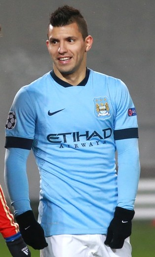

Jugadores destacados
Entre los jugadores que más se destacan en el club encontramos a Julián Álvarez, Erling Haaland, Bernardo Silva y Ederson
Máximo goleador del club
En la temporada 2014-15 ganó la Bota de Oro de la Premier League, y en noviembre de 2017 se convirtió en el máximo goleador de la historia del club. También fue incluido en el Equipo del Año por la PFA en las temporadas 2017-18 y 2018-19. Es el cuarto máximo goleador de la historia de la Premier League, y es el máximo anotador no-inglés en la historia de la competencia, con 184 goles.

